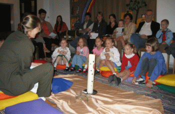

Seit Jahren gehen wir in unserer Pfarre während des Wortgottesdienstes in der Kapelle für die Schulkinder und in der Unterkirche für die Kleinkinder, Kindergartenkinder und 1./2. Klasse VS (vor der Erstkommunion) auf deren Bedürfnisse und Fähigkeiten ein. Dieses Angebot gibt es aber nicht jeden Sonntag und auch nicht während der gesamten Meßfeier, da die Kinder sich in die Gemeinschaft aller Feiernden eingebunden erfahren sollen.
Der Aufbau der Kinderliturgie in der Unterkirche ist dem allgemeinen Wortgottesdienst nachempfunden. Zu Beginn singen wir meist ein Begrüßungslied, in dem wir uns bewußt wahrnehmen, und wir zünden eine Kerze an zum Zeichen, daß Gott bei uns ist. Gemeinsam beten wir und machen ein Kreuzzeichen. In einem weiteren Lied drücken wir die Freude über unser Zusammensein mit Gott aus, ähnlich dem Gloria. Es folgen biblische Erzählungen, Gespräche, aber auch Geschichten aus dem Alltag der Kinder, in denen Werte wie Staunen, Ehrlichkeit, Freundschaft, aber auch Überwindung von Angst, Ungeduld, Trauer vermittelt werden. Aus Freude darüber, daß Gott uns liebt, singen, tanzen, klatschen und lachen wir, sind froh oder still und hören zu.
 In der Unterkirche sind auch die Kleinsten mit ihren Eltern zum Dabeisein eingeladen. Wenn sie auch den Inhalt des Dargebotenen noch nicht aufnehmen, so doch die Atmosphäre. Für Kinder, die sich gern bewegen, ist auch Platz genug. Kein Kind muß beten, singen, etwas tun. Auch das Da-Sein, Zuschauen, Zuhören ist wichtig. Wer lieber noch auf dem Schoß der Mutter, des Vaters, der Großmutter sitzt, ist genauso herzlich willkommen wie jemand, der mitplaudert und mittut.
Ein Dankeschön allen Eltern, die es ihren Kindern ermöglichen, so den Sonntagsgottesdienst mitzufeiern.
Als Zeichen dafür, daß während einer heiligen Messe die Kinderliturgie für die Kleinsten in der Unterkirche während des Wortgottesdienstes stattfindet, hängt bei den Abgängen zur Unterkirche die Sonne.